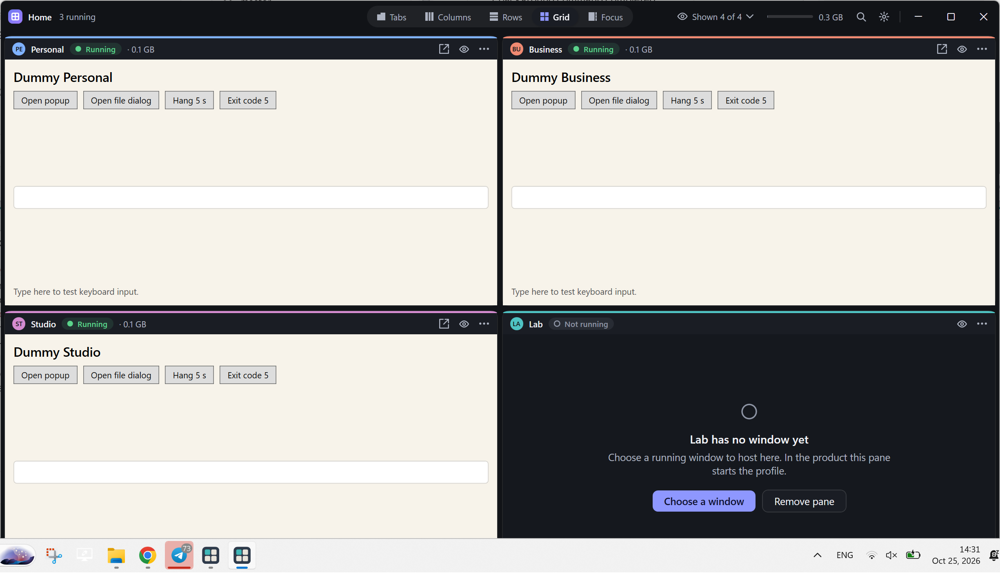
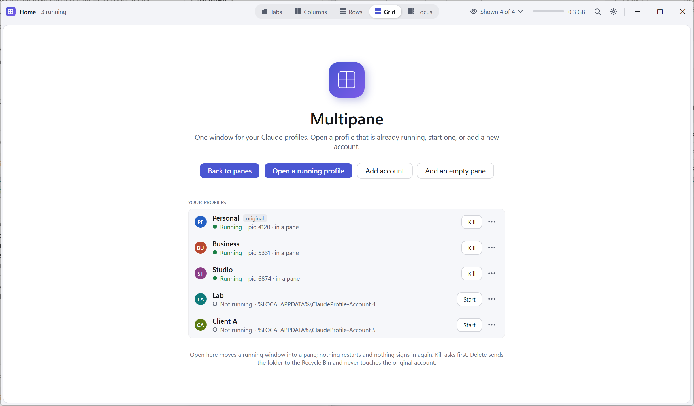

Multipane
One window for all your Claude Desktop profiles on Windows. Tabs, columns, rows, grid or focus. Start, kill and reopen sessions. A crashed session stays put with a Reopen button.

What it does
- Uses the profiles the Claude Profile Switcher already created, where they are. No new sign-ins, nothing moved.
- Hosts the running Claude windows inside one window, in the arrangement you pick, with one click to switch.
- Pop a pane out and dock it back. Hide a session without killing it. Kill asks first and says what will stop.
- Light and dark, follows Windows or your choice.
What it never does
- No network access of any kind. No telemetry, no update check.
- No reading of cookies, tokens or chats inside a Claude profile folder.
- No code injection, no debugging ports. Only Electron's documented command-line switch and standard Windows APIs.
- No admin rights, services or scheduled tasks.
Every folder, registry key and API it touches is listed in one page, and SECURITY.md says how to check it in under an hour.

Multipane is an independent, open-source tool (MIT). It is not made by, affiliated with, or endorsed by Anthropic. Claude is a trademark of Anthropic, PBC. Using more than one Claude account is subject to Anthropic's terms of service. Built on the Claude Profile Switcher and claude-switcher projects.